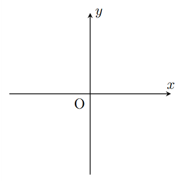
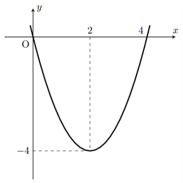
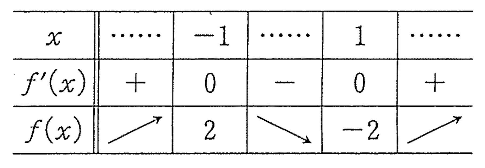

p.197
第2節 関数の値の変化
４ 関数の増減と極大・極小
グラフの特徴
クイズ
次の関数のグラフを描け。
(1) $y=x+2$
(2) $y=x^2$
(3) $y=x^3-3x$
関数と接線
関数のグラフ上の点Aに近いところでは、
関数のグラフはAにおける
すなわち、関数の増減は
前時の復習
接線の方程式(省略)
$$y-f(a)=f'(a)(x-a)$$
本時の目標
導関数を使って関数の増減を調べてグラフを描こう
関数の増減と導関数
$f(x)=x^2-4x$のグラフ
$f(x)$の導関数は$f'(x)=$
よって、$y=f(x)$のグラフ上の点A$(a,f(a))$における接線の傾きは

-
$a>2$では$f'(a)$
> $0$点Aにおけるグラフの接線は
右上がり で、
関数は増加 している。 -
$a<2$では$f'(a)$
< $0$点Aにおけるグラフの接線は
右下がり で、
関数は減少 している。 -
$a=2$では$f'(a)$
= $0$点Aにおけるグラフの接線は
$x$軸に平行 で、
関数の値は$-4$ である。
関数$f(x)$の増減と導関数$f'(x)$の符号
- $f'(x)>0$となる$x$の範囲では、$f(x)$は
増加 - $f'(x)<0$となる$x$の範囲では、$f(x)$は
減少 - $f'(x)=0$となる$x$の範囲では、$f(x)$は
一定の値
例８ 関数$f(x)=x^3-3x$の増減を調べる。
$f'(x)=$
$f'(x)=0$とすると、
$f'(x)>0$を解くと、
$f'(x)<0$を解くと、
よって、$f(x)$の増減は、次のような表で表される。
したがって、$f(x)$は
この表はどういう意味？
このような表を
- $f'(x)$が$+$のとき$f(x)$は$\nearrow$となって、その範囲で関数が増加すること
- $f'(x)$が$-$のとき$f(x)$は$\searrow$となって、その範囲で関数が減少すること
を示す。
練習15 次の関数の増減を調べよ。
- $f(x)=x^3-6x^2+5$
- $f(x)=-2x^3-3x^2+12x+1$